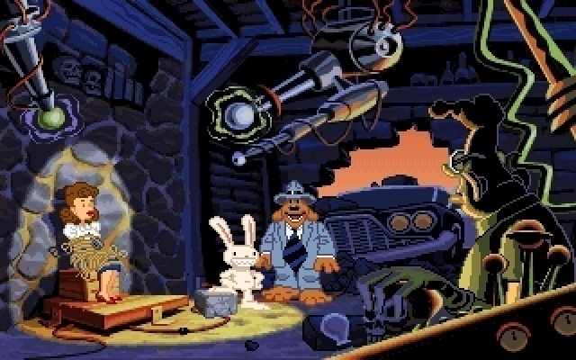
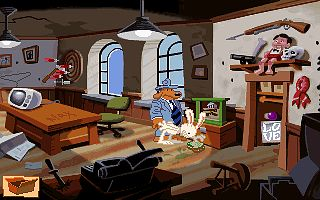
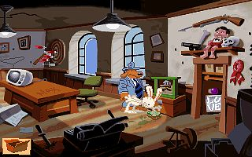
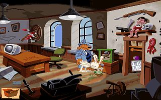

Sam and Max - Hit The Road
Haken schlagen ist bekanntlich sehr beliebt in Hasenkreisen. Da macht auch Max keine Ausnahme, allerding dienen seine Haken nicht unbedingt der Fortbewegung - eher erinnern sie an die Handschrift von Mike Tyson. Max schlägt sie gekonnt und gern, wenn er mit seinem gleichfalls wenig zimperlichen Partner Sam in ganz Amerika unterwegs ist, um der schönen Trixi den langen Hals zu retten und fiesen Entführern das Handwerk zu legen. Bestimmen sie die Reiseroute der zwei, wenn es darum geht, zwischen Florida, San Francisco und South Dakota den Entführungsfall zu lösen und das Geheimnis der Yetis zu lüften.Sam & Max sind im Auftrag der Freelance Police unterwegs, und nichts kann sie aufhalten. Sam ist ein Detektiv der besonderen Art, der gegen die Bezeichnung "Schnüffler" wohl kaum etwas einzuwenden hätte, schließlich ist er unübersehbar ein Hund. Sein Outfit beweist, dass Sam in der Tradition der ganz großen Detektive im Stil von Philip Marlowe steht. Das Schlappohr im zerknautschten Anzug ist auch die Figur, die vom Spieler direkt gesteuert wird. Max, seine wichtigste Waffe, folgt ihm dabei auf Schritt und Tritt, auch wenn sich die beiden mal nicht hundertprozentig einig sind. Sams feine Nase und Max' schlagkräftige Argumente werden benötigt, um Bigfoot Bruno und Trixi, die Dame mit dem Giraffenhals, wiederzufinden. Mit diesem Auftrag startet das tierische Detektivduo in ein aberwitziges Abenteuer, das in mancherlei Hinsicht vom üblichen Adventure-Schema abweicht.So sind die beiden Hauptfiguren nicht dem Hirn eines Programmierers entsprungen, sondern der Phantasie des Comicautors Steve Purcell, (der übrigens als Hintergrundzeichner bei LucasArts in Lohn und Brot stand,) und diese Herkunft trägt einiges zu der besonderen Qualität des Spiels bei - durch Zeichnungen und Animationen, die auch Comicliebhaber begeistern, durch eine schlüssige und logische Handlung, vor allem aber durch phantasievolle Schauplätze und witzige Dialoge. Wie gut auch die Übersetzer gearbeitet haben, offenbart sich in seiner ganzen Pracht erst in der deutschen CD-ROM-Version, bei der sämtliche Dialoge und Kommentare gesprochen werden - Soundkarte vorausgesetzt. Es lohnt sich mitzudenken, um keine der Anspielungen zu verpassen, und manchmal ist es sogar die Mühe wert, einen Satz ins Englische zurück zu übersetzen, um die Pointe eines Spruchs zu entdecken. Allein die Aussicht auf weitere sarkastische Kommentare von Hund und Hase hält den Spieler vor den Monitor (übrigens stammt Max' Stimme von der deutschen Synchronsprecherin Sandra Schwittau, die ihr vielleicht schon als Bart Simpson oder Johanna von Orleans kennt), was nicht heißt, das knifflige Rätsel und Actioneinlagen zu kurz kämen. Im Gegenteil: wer meint, er habe genug gerätselt, darf sich zur Entspannung an nicht weniger als sechs Spielen im Spiel versuchen. Beim Bratz-das-Vieh™ muss Sam mindestens zwanzig vorwitzigen Nagern zeigen, wo der Hammer hängt; beim "Gator Golf" muss Max mittels Fischen, Alligatoren und eines Golfschlägers befreit werden; beim "Highway Surfen" dürfen sie mal richtig Gas geben...
Kreuz und quer durch die vereinigten Staaten geht die Reise. Sollte ihnen dabei ein Klavier über den Weg laufen, hauen sie in die Tasten, oder sie bekommen nie zu hören, wie Max das berühmte Bogart-Zitat aus Casablanca verunglimpft (Don't play it again, Sam!). Sehenswürdigkeiten näher zu betrachten, lohnt sich bei jeder Gelegenheit. Diese sind dankenswerterweise auch alle korrekt auf der Karte plaziert. Eine der größten Saurierfundstätten der Welt liegt tatsächlich in South Dakota, und dort sind auch am Mount Rushmore vier Präsidenten in den Fels gehauen. Vulkane und riesige Magneten unter der Erdkruste gehören an die Westküste, auch wenn das mit den Magneten natürlich gegingfügig anders zu verstehen ist. Alligatoren in Florida, Merkwürdigkeiten im Niemalsland des mittleren Westens, Country- und Rockstars in Tennessee und Fischerei am nicht eingezeichneten Mississippi - ergibt alles einen gewissen Sinn im Unsinn. Genießen sie also Land und Leute.

 
Screenshots(10)

Screenshots(10)

Screenshots(10)
Fakten & Co.
- Erschienen: 1993
- Sprache: deutsch (mit Sprachausgabe)
- Altersempfehlung: ab 12
- Systemanforderungen
386 DX 33MHz
DOS 5.0
4 MB RAM
17 MB Festplatte (Diskettenversion)
2 MB Festplatte (CD-Version)
VGA Grafikkarte
Empfohlen:
486 DX 33MHz
2MB EMS Speicher (Diskettenversion)
Soundblaster
Bewertung
5/5 Sternen
5/5 Sternen